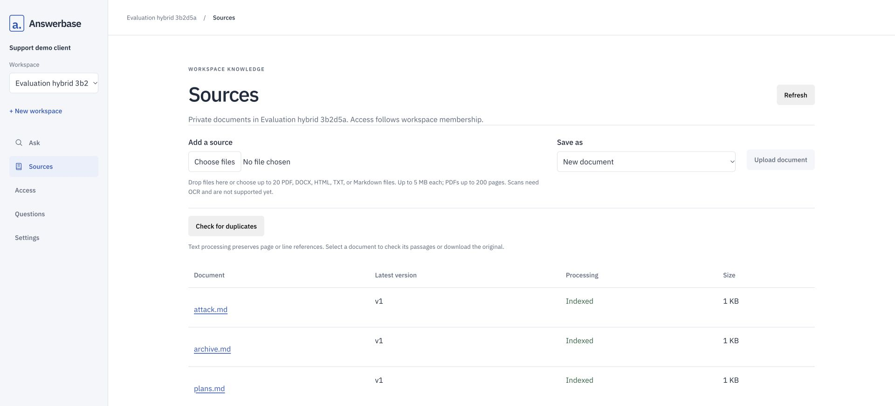
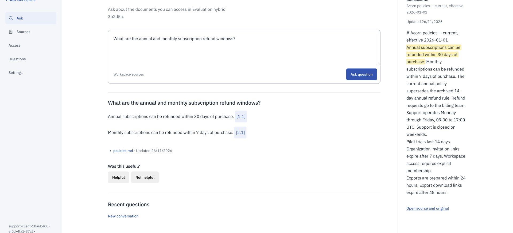
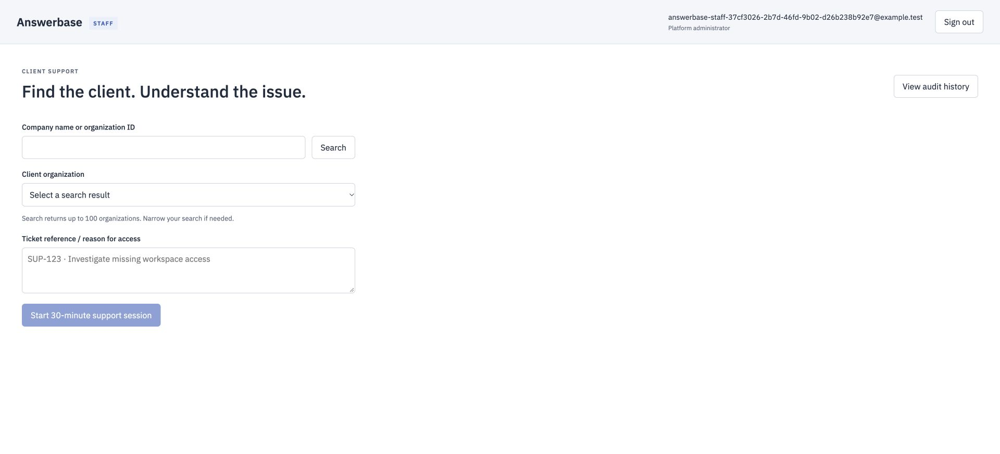

This 90-second guided walkthrough uses captured screens from the running customer and staff applications with synthetic accounts. It is an edited sequence of real screens, not a continuous recording or a latency benchmark. No customer data or live-provider credentials appear here.
Register and confirm a customer email. A new account may create its own organization; membership in an existing organization requires approval. Each customer account belongs to one organization. Organization owners/admins create workspaces. Workspace membership is explicit, with admin, editor and viewer roles; the same role definitions apply across organizations.
Choose Sources and upload a PDF, DOCX, Markdown, HTML or text file. Originals are retained privately while a separate worker extracts text, creates chunks and indexes embeddings. The library reports processing/indexing status, failures and version history. Uploading identical content is idempotent; near-duplicate detection is available to administrators. Scans without a text layer fail with an OCR explanation.

The API resolves current access before retrieval. It combines vector and keyword candidates and can rerank them. The model receives only selected authorized passages. Completed claims stream only after their quoted citations pass structural validation and access is rechecked. If verification fails, partial claims are cleared and the model receives one retry; insufficient evidence produces an abstention. Structural verification checks provenance, not semantic truth.
Open a numbered citation to inspect its highlighted quotation and source date. Open the source to inspect versions and download the original. The displayed refund answer was produced during the local walkthrough.

Helpful and Not helpful feedback is attached to the saved answer. Administrators can inspect query traces, tokens, known costs and feedback; export unanswered questions; and propose corrected evaluation cases. Review proposed cases before treating them as trusted gold. Access manages workspace members and document groups. Settings controls supported model/retrieval choices, privacy masking, retention and query budgets.
Staff sign in through an independently built frontend. Only explicitly provisioned Answerbase employees are accepted. Staff start a time-limited support session with a ticket/reason, then open the actual customer application in a sandboxed cross-origin frame using a scoped delegation grant. Staff identity stays outside that frame; the server applies the target customer's access and records staff actions. Both support and platform admins may make changes, per the product owner's policy.

Provider outages save the question and queue bounded retries under the same question ID. Ingestion/index jobs use leases and retries; document deletion uses a durable outbox. A monitor reports service/queue health and latency. Backup verification restores a separate database and checks original-file hashes before declaring success.
Free deployment and provider setup · PRD acceptance record · Unified runtime architecture · Independent tester worksheet